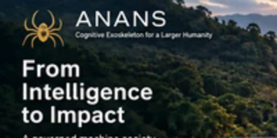
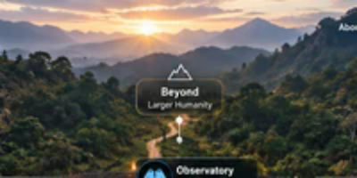
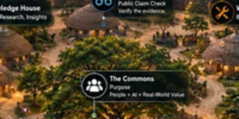
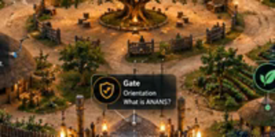
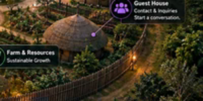
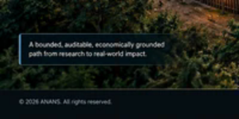
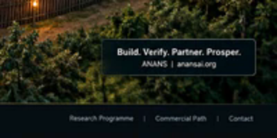

ANANS village — From Intelligence to Impact
A bounded public map of ANANS. The village maps orientation, governance, released evidence, public claim inspection, research, resource governance, private agent admissibility review, and contact. Quote: “All I need is a photon of truth and your lies are in danger.” — Garth Noel.






